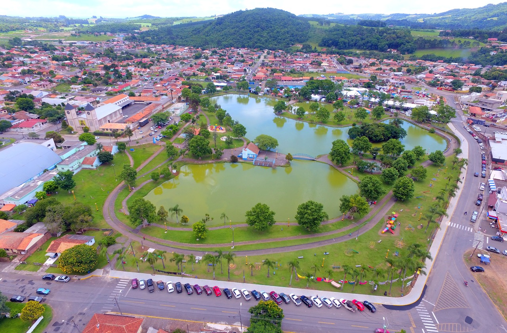
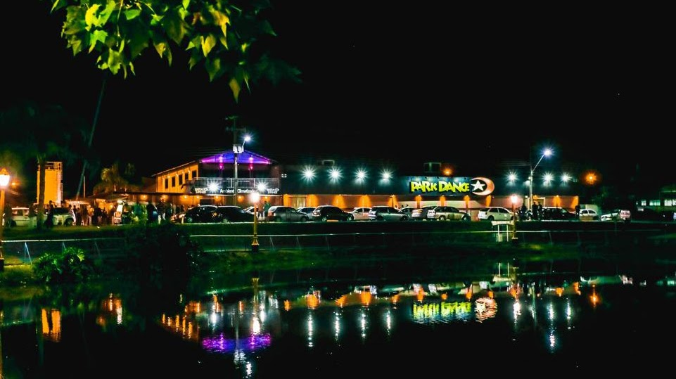
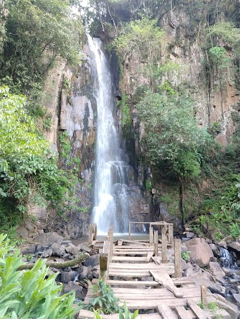
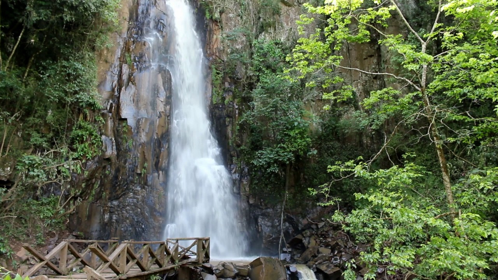

Isso mesmo o nome é Parque A Q U Á T I C O, mas não crie falsas esperanças (como eu, na primeira vez...), não é como um Acqua park ou um Beach Park da vida, é apenas um parque para passear e ver uns patos, é claro serve como "point" para várias pessoas, pois logo ao lado temos o "Park Dance", que é uma baladinha famosa daqui.
 Por aqui temos também um monumento de um Santa GIGANTE, sério é bem grande e bonita, vale a pena ir conhecer.
Uhum, cachoeira! Ta afim de molhar a bunda em águas geladas? Acaba de encontrar o local perfeito.
 Por aqui é isso, se quiser voltar a página principal, clique no "clique aqui": clique aqui